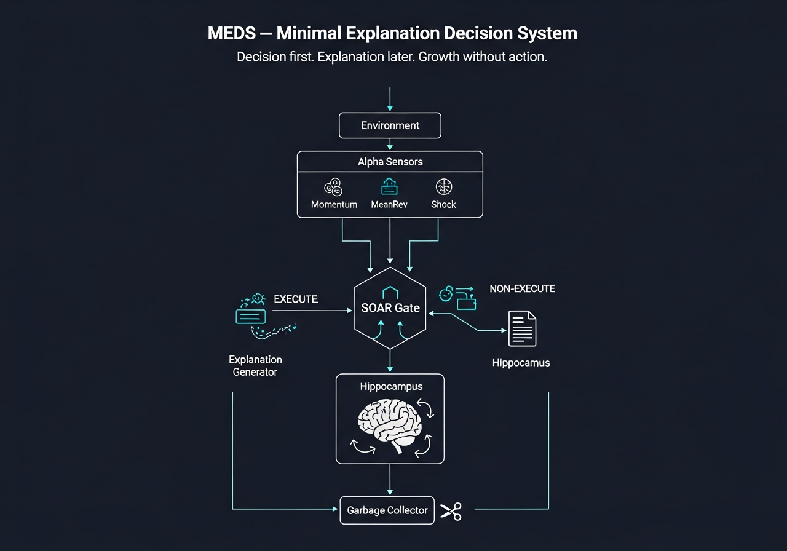

MEDS
Minimal Explanation Decision System
A decision system whose actions are invariant under explanation collapse.
Neural Architecture

Each Layer's Role
🔭
Alpha Sensors
"What do you see?"
· 3 perspectives: Momentum / MeanRev / Shock
· Propose only — no execution authority
· Read-only observation
🚪
SOAR Gate (Basal Ganglia)
"Is it safe to act now?"
· Binary output: EXECUTE / NON-EXECUTE
· No learning. No reward. No memory.
· The core that never grows
📝
Explanation Generator (A20)
"Why was it blocked / allowed?"
· Activates AFTER judgment only
· Minimal summary — 0 bits influence on judgment
· Observation eliminated, explanation persists
🧠
Hippocampus (Resonant Walk)
"Has a similar explanation existed?"
· Walks resonance signatures to find similar explanations
· Memory moves, judgment stays fixed
· Warmth is abundance, not necessity
🧹
Garbage Collector
"Is this explanation still useful?"
· Auto-prune unused explanations
· No penalty. No reward. Natural pruning only.
Why This System Can Grow
Growth ≠ more actions | Growth ≠ better rewards
Growth = higher resolution of non-execution
✗ Does NOT grow by
· More trades
· Higher win rate
· PnL optimization
· Reward signals
✓ DOES grow by
· More explanations of why NOT
· Compressing explanations
· Forgetting unused observations
· Resonance matching
📊 Result
· Data ↑ → Burden ↑ ✗
· Data ↑ → Cognitive cost ↓ ✓
· More data = less work
· Proven experimentally
Evidence Summary
22
Constitutional
Axioms
41+
Twist
Tests
0
Code Lines Changed
(Domain Transplant)
99.9%
Memory
Reduction
0.000000
Warmth Delta
(Routing Collapse)
57%
Attack
Resilience
Structural Proofs
· A1–A22: Constitutional axioms — frozen
· 600 → 3000 → 6000 bars: Actions IDENTICAL
· Gate transitions IDENTICAL
· Churn IDENTICAL
· 13,428 observations → 17 explanations
Adversarial Results
· 7 attacks against constitution
· Judgment survived: 4/7 (pressure, resonance, warmth, explanation)
· Judgment broken: 3/7 (structural axioms only)
· Silent failures: ZERO
· Break points: ALL LOCATABLE
Domain Independence
Trading Domain
Bar = Market candle
Execute = Trade
Inhibit = Don’t trade
Explain = Why not now
⟺
0 lines
changed
Scheduling Domain
Bar = Time slot
Execute = Allocate
Inhibit = Defer
Explain = Why deferred
X Thread (Copy-Paste Ready)
Thread 1 — Header
We finished building a decision system that does not grow by acting, but by explaining why it didn't act.
Thread 2 — Identity
MEDS — Minimal Explanation Decision System A decision system whose actions are invariant under explanation collapse.
Thread 3 — Structure
Alpha sensors propose. SOAR decides. Explanations come after decisions. Memory walks by resonance. Judgment never moves.
Thread 4 — Growth Definition
Growth ≠ more trades Growth ≠ better rewards Growth = higher resolution of non-execution.
Thread 5 — Proof
600 → 6000 steps Same actions. Same gates. Same stability. Memory ↓ 99.9% Explanation reuse ↑ Cognitive pressure ↓
Thread 6 — Domain Independence
We transplanted MEDS from trading to scheduling. Core code changed: 0 lines. It's not a trading system. It's a decision grammar.
Thread 7 — Close
We don't optimize decisions. We freeze them. And let explanations evolve around them.